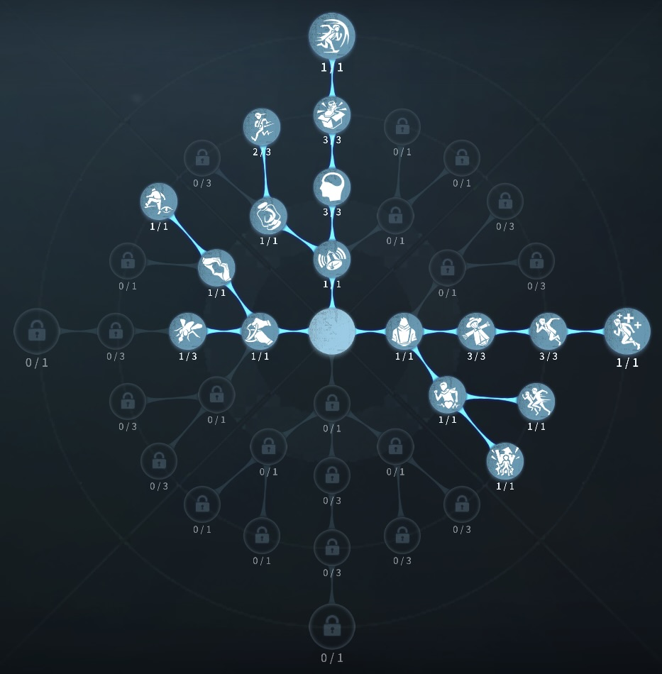
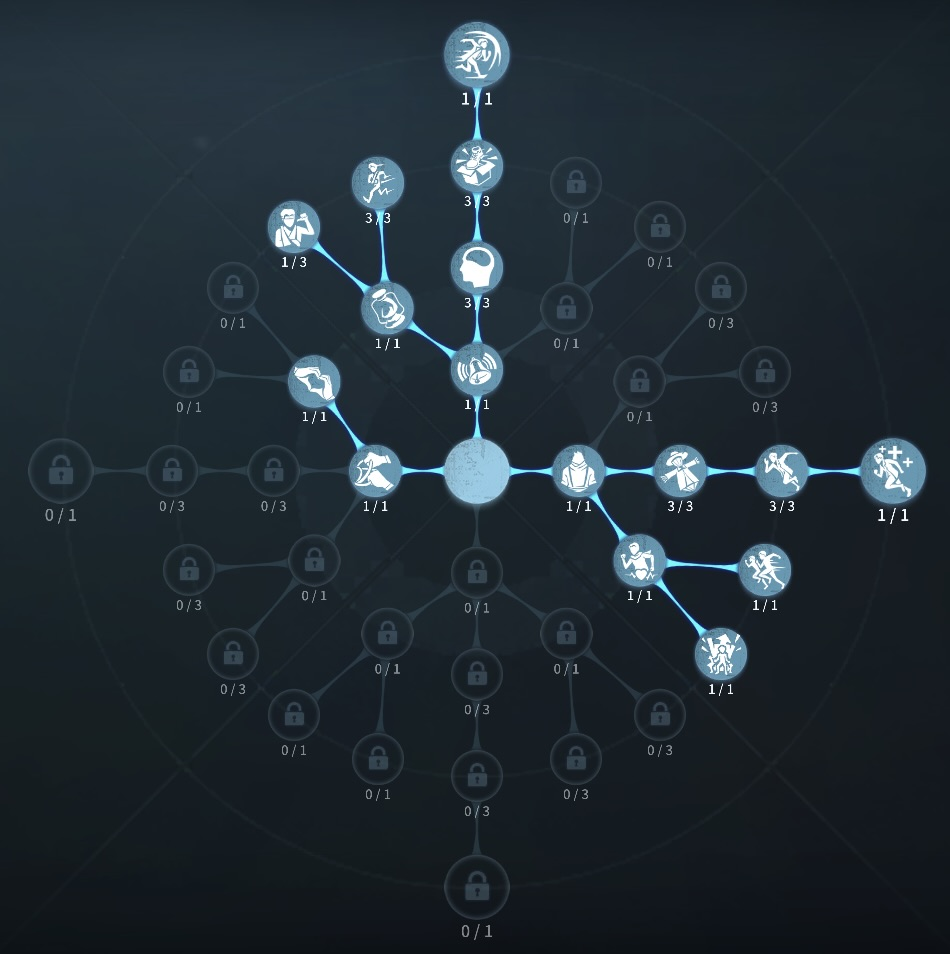

弓使いの評価
最強の遠距離粘着
外在特質と特徴
特質1:竜骨弓
・指定方向に矢を発射できる。弓は溜めて使用でき、溜めている間は弓使いの移動速度が10%低下する。・矢がハンターに命中するとハンターを重傷状態にし、同時に重傷度を50付与する。溜めの時間が一定時間に満たない場合、矢が命中した際に与える重症度が40減少する。
・ハンターとの距離が一定範囲内であればハンターの核心を射ることができ、ハンターの核心に命中した時、与える重傷度は100になる。弓を溜めている間に、少しずつハンターをロックオンしていき、完全にロックオンした状態で放たれた矢は必ずハンターに命中する。
所持数：3つ クールタイム：12秒
重傷
ハンターは重傷効果が付与されている時、移動をすると重傷度が上昇し、移動速度に応じて上昇速度が増加する。立ち止まると重傷度は減少していく。重傷度が100に達すると、ハンターは2.5秒間スタンする。
特質2:アームボウ
・後ろに向かって一定距離跳躍しながら矢を放つ。矢がハンターに命中すると、60の重傷度を与える。所持数：2 クールタイム：
特質3:バッコスの精神
・自身の心音範囲が30%減少する。・弓使いは心音範囲外に出ると移動速度が5秒間、15%低下する。
特徴
遠距離から矢を放ちスタンさせることができる。ハンターとの距離が近い状態で矢を放つと、スタン前に攻撃をもらいやすい
2階からも粘着することができ、遠距離から粘着できるのが強力 矢を放ってから、アームボウを使うことで、確定スタンを狙える。
基本的な立ち回り方
1. 追われた時
竜骨弓とアームボウは惜しみなく使っていこう。
ポジション変更、一本道でのチェイス時、竜骨弓とアームボウの確定スタンを狙っていこう。
ハンターが死角にいる時は、弓を構えないでおこう。（足が遅くなるため）
アームボウは弱体化のフライホイールのような使い方をすれば、ハンターのスキルなどをよけられる。
2. 追われない時
解読に専念する！
心音範囲が思っている以上に狭いためハンターの位置を確認、警戒しておく。
また、必要な時であれば、粘着やダブルチェイスなどで合流してもよい。
おすすめの内在人格
フライホイール粘着型人格
この内在人格は、感覚順応で板窓を監視し、防衛反応でチェイスを高めた人格

フライホイールチェイス型人格
この内在人格は、防衛反応を最大化させ板窓を最強にし観客効果で解読速度を高めた人格


みんなのコメント